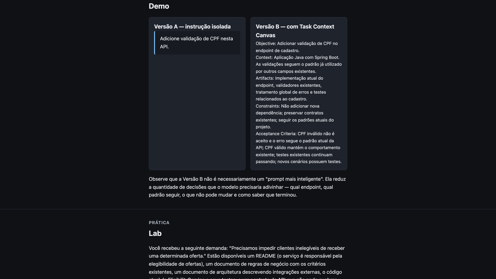
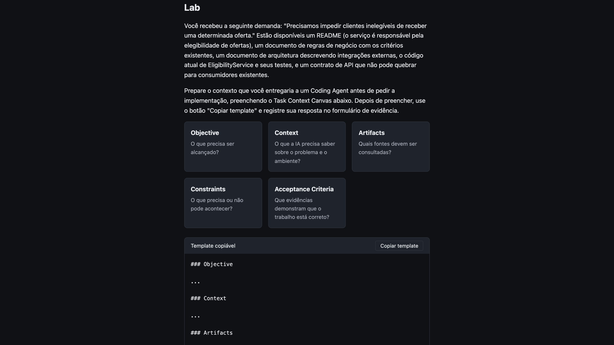
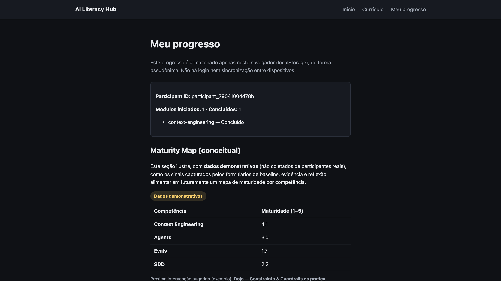
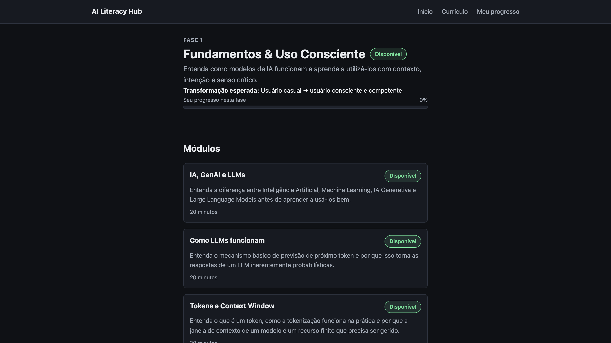

AI Literacy Hub
Uma POC de aprendizagem async-first para evolução da maturidade em IA
Letramento em Inteligência Artificial para profissionais do ciclo de desenvolvimento de software — Devs, QAs, POs, Tech Leads e demais papéis.
O desafio
Como escalar letramento em IA sem depender de um instrutor full-time?
Público heterogêneo
Devs, QAs, POs, Tech Leads, arquitetos, dados, gestores — com níveis de familiaridade com IA muito diferentes entre si.
Sem instrutor dedicado
Não há disponibilidade full-time para ministrar aulas, acompanhar cada participante ou produzir conteúdo constantemente.
A hipótese
Async-first + Learning by doing
A maior parte da experiência precisa funcionar sem instrutor. Momentos síncronos (Dojos, Workshops, Clinics) entram apenas onde os sinais indicarem necessidade.
A visão
Entender → Delegar → Projetar
1. Fundamentos & Uso Consciente
Usuário casual → usuário consciente e competente. 11 módulos completos.
2. Agentic AI & Orquestração
Usuário → operador de agentes e workflows.
3. AI-Native Software Engineering
Operador → designer de workflows AI-native.
Uma quarta fase, de contexto organizacional específico, está fora do escopo desta POC.
O vertical slice
Context Engineering
O prompt descreve o que queremos. O contexto fornece aquilo que a IA precisa saber para executar bem.

Demonstração
Vamos experimentar como participante
A partir daqui, a apresentação dá lugar à aplicação real por alguns minutos.
- Abrir a Home e a Fase 1
- Entrar no módulo Context Engineering
- Preencher o Task Context Canvas no Lab
- Marcar o módulo como concluído

O que estamos medindo
Perception, Knowledge, Application
Perception
"Eu acho que sei." Capturado no formulário de baseline, antes do conteúdo.
Knowledge
"Eu consigo reconhecer ou explicar." Capturado na reflexão, após o módulo.
Application
"Eu consigo fazer." Capturado na evidência do Lab — o Task Context Canvas preenchido de verdade.
Application > Completion
Learning Loop
Os sinais direcionam o programa, não só um dashboard

Arquitetura da POC
Markdown + JSON → Hub estático → localStorage + Forms
11 / 11
módulos da Fase 1 publicados
16
páginas estáticas geradas no build
0
erros de TypeScript (astro check)
12 / 12
testes automatizados passando (Vitest)

Sem backend, sem SSR, sem banco de dados, sem autenticação. Adicionar um módulo exige apenas um arquivo de conteúdo — nenhuma página nova.
Dogfooding
Construímos o produto com as práticas que ele ensina
Humano
Intenção, contexto, arquitetura, decisões, restrições, validação.
Agente
Exploração, implementação, execução de tarefas, testes, iteração.
Não eliminamos engenharia para ganhar velocidade. Usamos engenharia para delegar melhor.
Honestidade sobre o estágio
O que foi validado vs. o que ainda é hipótese
Validado
- Build estático conclui sem erro; 0 erros de TypeScript
- Progresso local persiste após reload (testado no navegador)
- 11 módulos da Fase 1 renderizam com conteúdo completo
- Ausência de Form configurado não quebra a aplicação
- Schema barra conteúdo publicado inválido no build
Ainda é hipótese
- Participantes reais conseguem concluir a jornada sozinhos
- Os sinais coletados realmente direcionam intervenções síncronas
- O modelo se sustenta ao escalar para as Fases 2 e 3
- Os Google Forms reais ainda não foram publicados — só documentados
Próximo experimento
Pilotar com um grupo pequeno e aprender com dados reais
- Publicar os Google Forms reais (roteiro já pronto em docs/forms/foundations/)
- Convidar um grupo piloto pequeno e heterogêneo
- Observar Perception, Knowledge e Application de verdade
- Usar os gaps reais para decidir o primeiro Dojo/Workshop/Clinic
O próximo passo não é construir mais plataforma. É gerar evidência de aprendizagem.